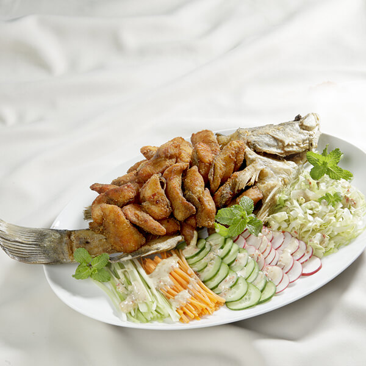

SALAD CÁ CHIÊN GIÒN

Thịt cá chẽm ngọt tự nhiên được tách xương và áo bột chiên giòn rượm, có vị béo nhẹ, thơm dầu mè rất lạ miệng mà ngon tuyệt, được trộn cùng rau củ tươi ngon giúp món ăn cân bằng dinh dưỡng.
NGUYÊN LIỆU
- Cá chẽm 1 con (khoảng 800g)
- Củ cải đỏ (củ ra di) 3 củ
- Dưa leo baby 2 trái
- Cần tây 1 cây
- Cà rốt 50g
- Xà lách xanh 50g
- Mè rang 2M
- Tỏi băm, ớt băm, 1 miếng chanh
- Gia vị: đường, dầu mè, dầu ăn, tiêu
- Nước tương “Phú Sĩ”
- Xốt Mayonnaise Aji-mayo® Vị Nguyên Bản
- Gia vị nêm sẵn Aji-Quick® Bột tẩm khô chiên giòn
SƠ CHẾ
- Cá chẽm lạng 2 bên mình cá để lấy phần thịt phi lê, xương cá giữ lại, thịt cá cắt miếng dày 1cm, rắc đều vào cá 1/3m ớt bột và ít tiêu.
- Cà rốt, xà lách cắt sợi nhỏ. Cần tây cắt sợi mỏng. Dưa leo, củ radi cắt lát mỏng.
THỰC HIỆN
- Đun nóng dầu, cho xương và thịt cá chẽm tẩm qua Aji-Quick® Bột chiên giòn, chiên chín vàng giòn, vớt ra để ráo dầu.
- Pha xốt trộn salad: 2M xốt Mayonnaise Aji-Mayo®, 1M nước tương “Phú Sĩ”, 1m đường, 1M dầu mè, 1m tỏi băm, 1m ớt băm, 1M mè rang và 1m nước cốt chanh.
CÁCH DÙNG
Xếp xương và cá chiên ra dĩa, sắp xếp rau củ xung quanh, khi ăn rưới xốt lên rau, chấm cá với xốt.
MÁCH NHỎ
Giữ lại phần xương cá để chiên giòn ăn cùng xốt mè rất ngon.